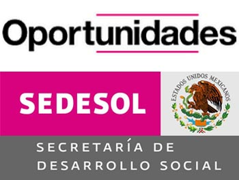
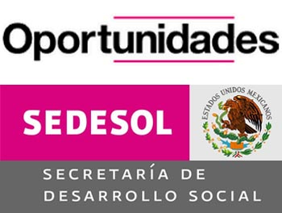

BECA
DE OPORTUNIDADES
El objeto de PROSPERA es articular y coordinar la oferta institucional de programas y acciones de política social, incluyendo aquellas relacionadas con el fomento productivo, generación de ingresos, bienestar económico, inclusión financiera y laboral, educación, alimentación y salud, dirigida a la población que se encuentre en situación de pobreza extrema, bajo esquemas de corresponsabilidad que les permitan a las familias mejorar sus condiciones de vida y aseguren el disfrute de sus derechos sociales y el acceso al desarrollo social con igualdad de oportunidades.
Mejorar el ingreso y el bienestar de las familias mexicanas en situación de pobreza, a través de la articulación de acciones con otros programas y estrategias de la política social y de la política económica bajo un enfoque de colaboración interinstitucional, entre los tres niveles de gobierno, con la sociedad civil organizada y la iniciativa privada.
En el CBTiS 16 buscamos apoyar al alumno ofreciendole la ventaja de poder conservar esta beca para que con ello se le facilite seguir sus estudios.
 
